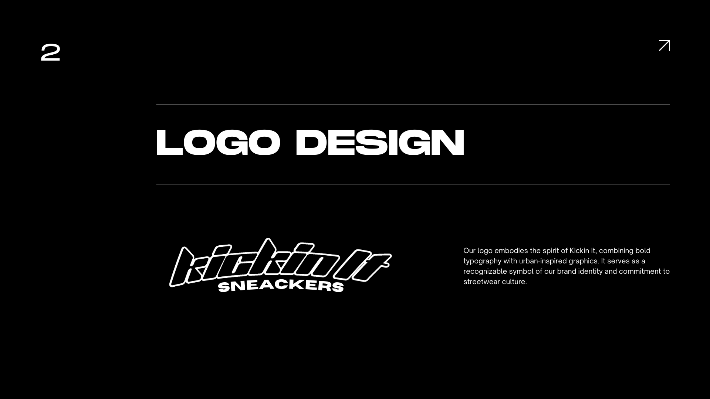
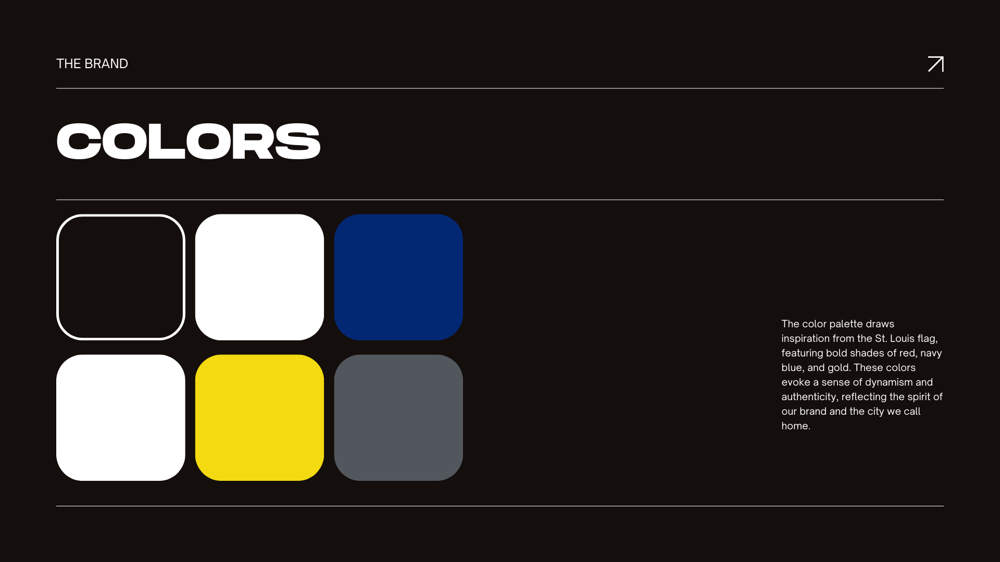
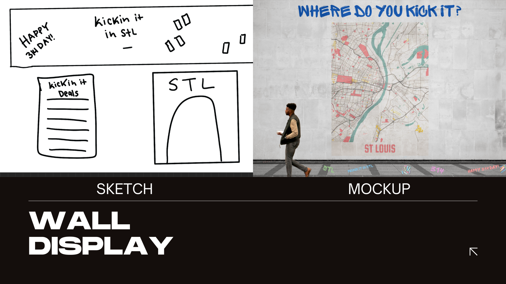
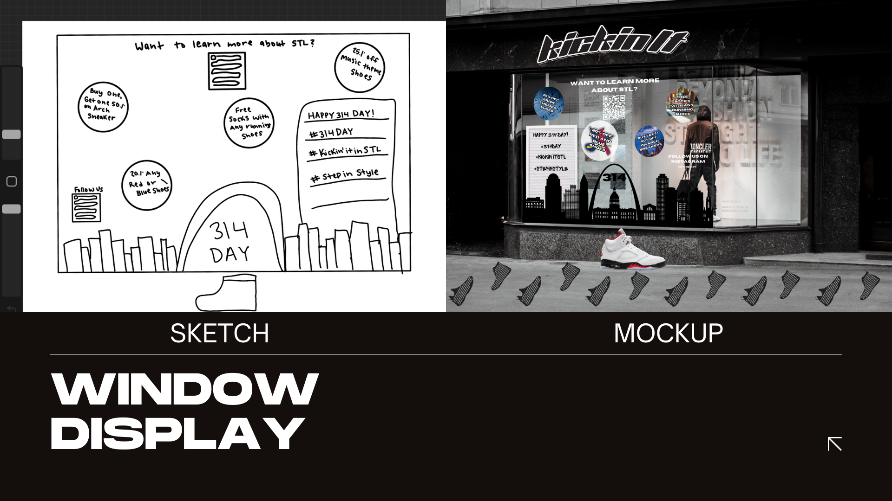
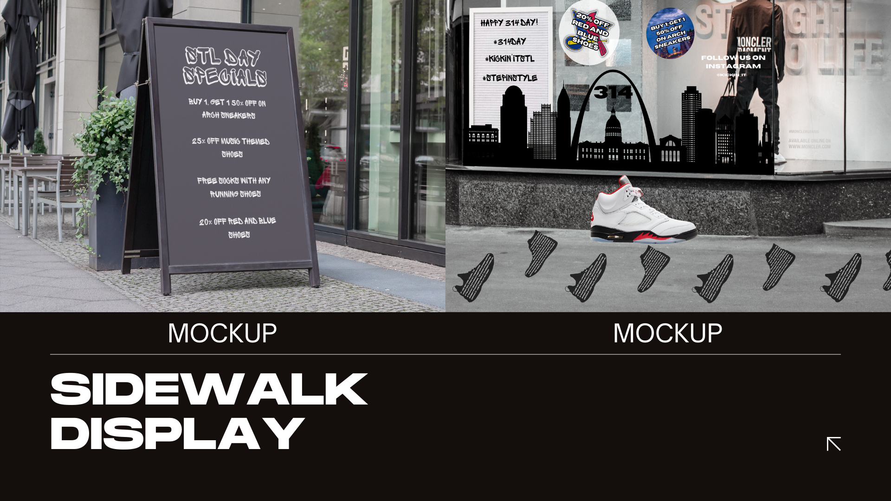
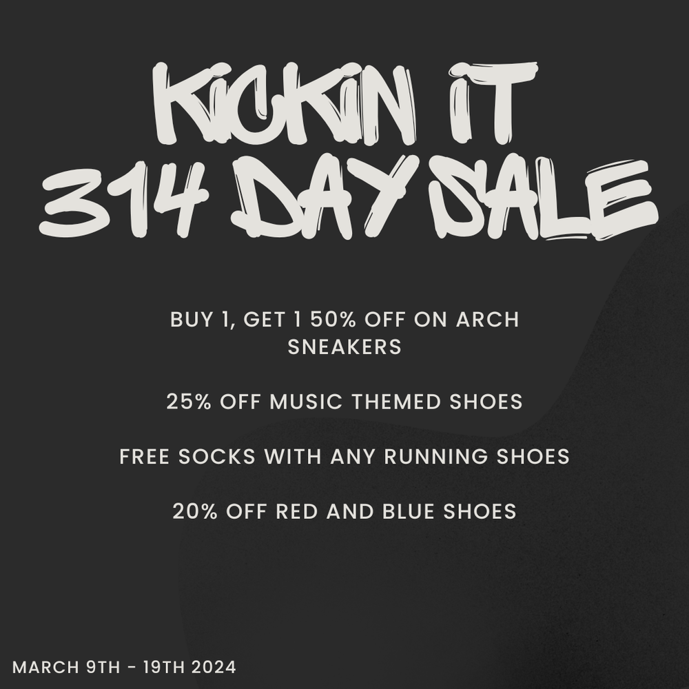
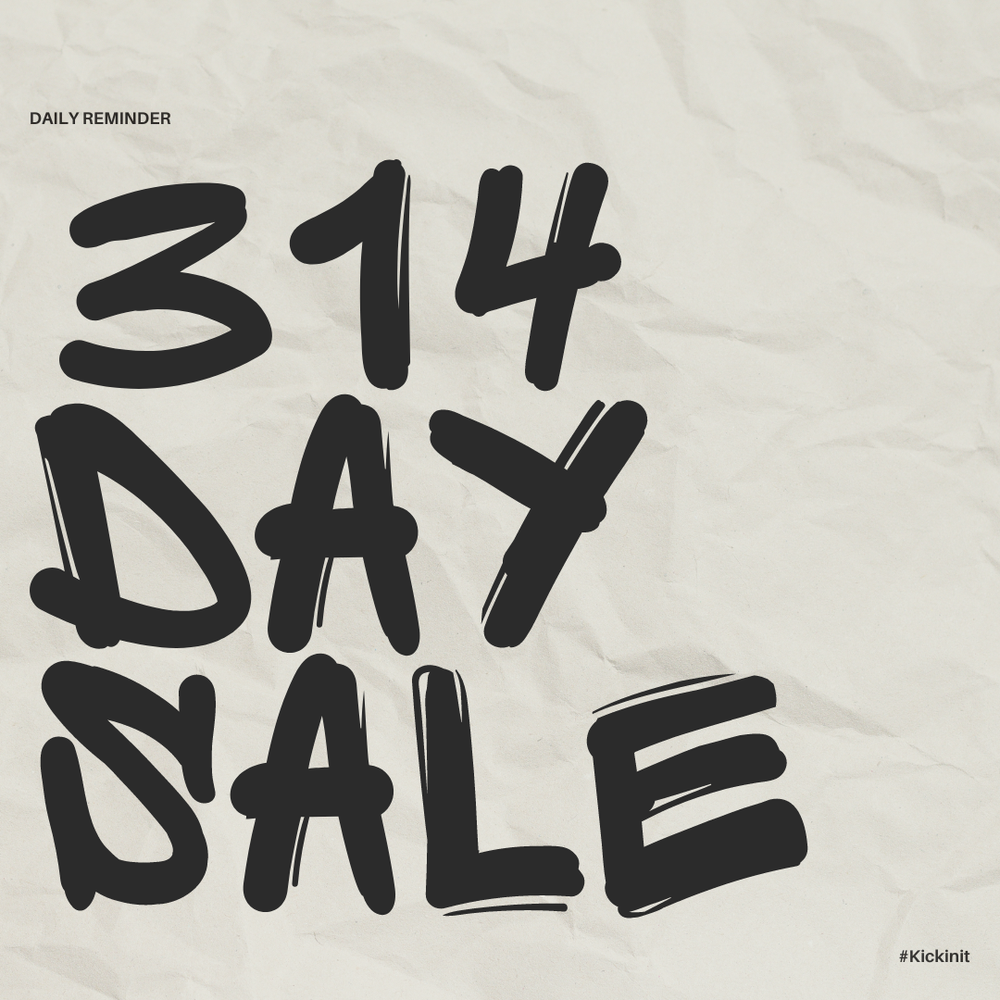
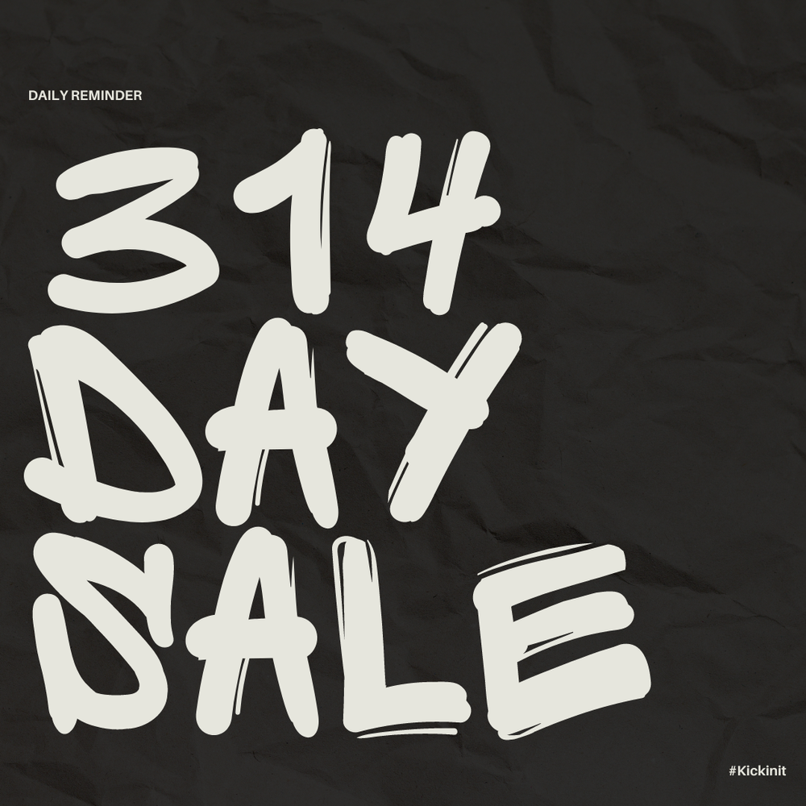
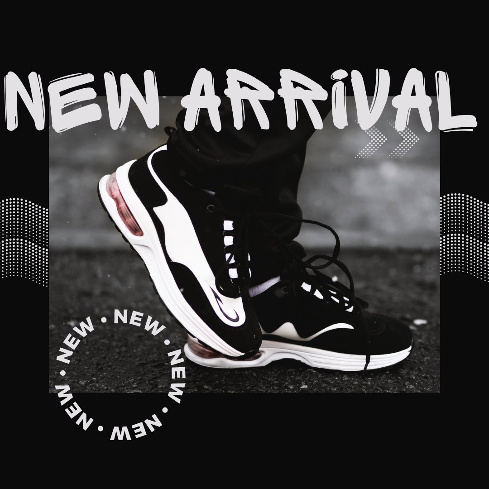
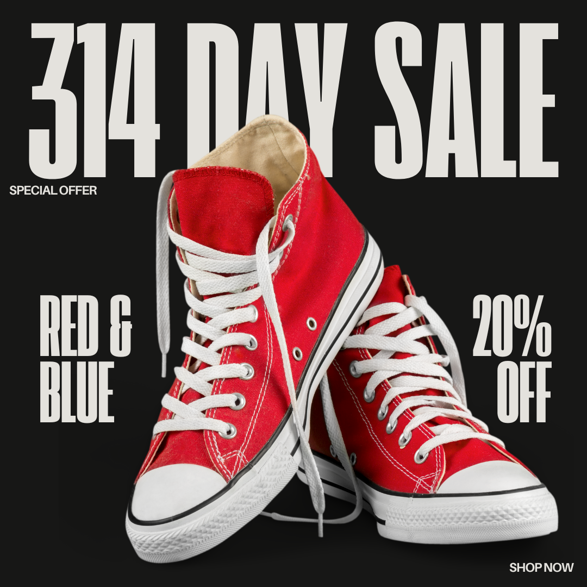

Campaign Overview
Kickin It is a conceptual sneaker boutique in downtown St. Louis celebrating 314 Day, a local holiday honoring the city's area code. I created a complete brand identity and marketing campaign that captures the spirit of St. Louis streetwear culture while driving foot traffic and sales during the March 9-19 promotional period.
The campaign needed to feel authentically St. Louis, appeal to sneaker enthusiasts, and create urgency around limited-time offers. The result is a bold, urban-inspired identity system featuring graffiti-style typography, St. Louis landmark imagery, and a color palette drawn directly from the St. Louis city flag.
Campaign Details
Brand
Kickin It Sneakers
Downtown St. Louis
Urban Streetwear Boutique
Promotion
314 Day Sale
March 9-19, 2024
St. Louis Area Code Celebration
Special Offers
BOGO 50% Off Arch Sneakers
25% Off Music Themed Shoes
Free Socks with Running Shoes
20% Off Red & Blue Shoes
Deliverables
Logo Design
Environmental Graphics
Window Displays
Wall Murals
Social Media Campaign
Sidewalk Signage
Brand Identity
Logo Design
The Kickin It logo combines bold, italic graffiti-style lettering with clean "SNEAKERS" branding underneath. The urban-inspired typography embodies streetwear culture while remaining legible across all applications. The italic slant suggests motion and energy perfect for a sneaker brand.

Strategic Color Palette
The color system draws direct inspiration from the St. Louis flag, creating immediate local recognition and authenticity. The palette features bold shades of navy blue, red, and gold against neutral black, white, and gray foundations evoking both the city's heritage and contemporary streetwear aesthetics.

Campaign Design Process
Each campaign element began with hand-drawn sketches to establish composition and messaging hierarchy before moving into digital mockups. This iterative approach ensured designs would work effectively in their intended physical environments.
Environmental Graphics Development

Wall mural featuring St. Louis map and "Where do you kick it?" messaging

Window graphics with St. Louis skyline silhouette and promotional badges
The wall display features an illustrated St. Louis map with the question "Where do you kick it?", connecting the brand to specific neighborhoods and creating community relevance. The window display uses the iconic Gateway Arch and city skyline silhouette alongside promotional offers, making the St. Louis connection immediately recognizable to passersby.

Marketing Campaign
Sale Messaging
Created bold, high-contrast promotional graphics featuring the hand-lettered "314 DAY SALE" typography. The graffiti inspired letterforms feel authentic to sneaker culture while maintaining excellent readability. Multiple offers are clearly hierarchized to drive specific purchasing behaviors.

Social Media Campaign
Designed a comprehensive social media presence with templates for Instagram and Facebook. Created both light and dark background variations to test engagement, featuring product photography, promotional text, and clear calls-to-action.

Daily Reminder Posts
Light background version with bold black typography for feed variety

Daily Reminder Posts
Dark background version with white typography for dramatic impact

Product Launch Content
"New Arrival" announcement template with circular branding and halftone effects

Promotional Sale Graphics
Product-focused sale announcement: "314 DAY SALE - RED & BLUE - 20% OFF"
Design Approach
The Kickin It campaign demonstrates a complete brand ecosystem created from scratch. Every element from logo to environmental graphics to social media works together to create a cohesive identity that feels both locally authentic and culturally relevant to sneaker enthusiasts.
The hand-lettered typography system provides flexibility across applications while maintaining consistent brand personality. By grounding the campaign in St. Louis pride (314 area code, Gateway Arch, city flag colors), the design creates immediate emotional connection with the target audience.
The sketching process allowed rapid iteration on layouts before committing to digital production, ensuring each design would function effectively in its intended environment—whether viewed from across a street (window displays) or scrolled past quickly (social media).
Results & Learnings
This conceptual project showcases my ability to develop complete brand identities and multi-channel marketing campaigns. The Kickin It system demonstrates strategic thinking about color psychology, typography for different contexts, environmental design, and integrated social media presence.
Key skills demonstrated include brand strategy tied to local culture, sketch-to-mockup workflow, environmental graphic design, social media campaign development, and creating flexible design systems that maintain consistency across diverse applications.
The project also shows understanding of retail marketing principles: creating urgency through limited-time offers, using strategic color (red & blue) to tie promotions to city pride, and designing attention grabbing environmental graphics that drive foot traffic to physical locations.